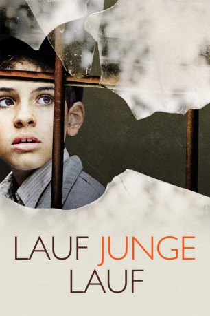
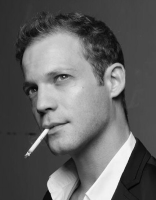
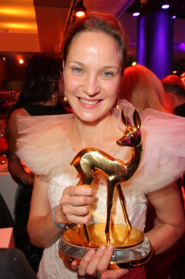
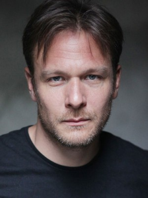
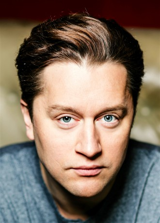
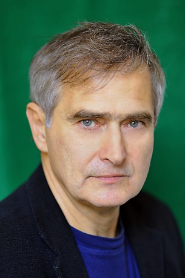
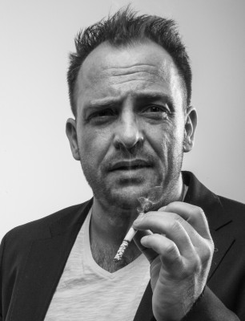

#8553 Lauf Junge lauf
 
 IMDB-Wertung: 7.1 / 10
IMDB-Wertung: 7.1 / 10  Metascore: 0
Metascore: 0 
Srulik ist knapp neun Jahre alt, als ihm gerade noch rechtzeitig die Flucht aus dem Warschauer Ghetto gelingt. Um den deutschen Soldaten zu entkommen, flieht er in das riesige, unwegsame Waldgebiet Kampinoski und muss dort lernen, wie es ist, ganz auf sich allein gestellt in der Wildnis zu überleben. Wie man auf Bäumen schläft, Kleintiere jagt und sich von Beeren ernährt. Von einem unerschütterlichen Überlebensinstinkt getrieben, übersteht er die ersten Monate seiner Flucht. Doch die eisige Kälte des Winters und die unerträgliche Einsamkeit treiben den Jungen in die Zivilisation zurück.
Jahr: 2013
Dauer: 98 Minuten
FSK: 12
Land: Deutschland Studio: NFP Marketing & DistributionTonspuren:
Untertitel:
Auflösung: 720p (1280x720) Größe: 3686 MB
Genre: Action, Drama, Krieg, Biographie
Regisseur: Pepe Danquart
Drehbuch: 41 Entertainment
Soundtrack: Stéphane Moucha
Darsteller:
- Elisabeth Duda als Magda Janczyk
-  Itay Tiran als Mosche Frenkiel
- Przemyslaw Sadowski als Grzegorz Kowalski
-  Jeanette Hain als Mrs. Herman
 Rainer Bock als SS-Officer
Rainer Bock als SS-Officer- Grazyna Szapolowska als Mrs. Ewa Staniak
- Zbigniew Zamachowski als Hersch Fridman
- Miroslaw Baka als Mateusz Wróbel
-  Jochen Hägele als SS-Officer Gestapo Headquarter
- Katarzyna Bargielowska als Riwa Fridman
- Grazyna Blecka-Kolska als Mania Wróbel
-  Adrian Topol als Young Partisan
- Waldemar Obloza als Old Partisan
-  Olgierd Lukaszewicz als Dr. Zurawski
 Kai Ivo Baulitz als SS-Officer Hospital
Kai Ivo Baulitz als SS-Officer Hospital- Stanislaw Brudny als Old Man Hospital
- Lech Dyblik als Fisherman
- Izabela Kuna als Mrs. Kowalska
 Sebastian Hülk als SS-Man 1 Janczyk Village
Sebastian Hülk als SS-Man 1 Janczyk Village-  Urs Rechn als SS-Man 2 Janczyk Village
- Lech Lotocki als Priest
- Golo Euler als SS-Man Alley
- Andrzej Tkacz als Jurek Staniak
- Kamil Tkacz als Srulik Staniak
- Lukasz Gajdzis als Pawel
- Marcel Stefanski als Farmer Jacket Farm
- Krzysztof Porowski als Awrum
- Franciszek Wielkoszynski als Schleme
- Szymon Kurylo als Joselelcek
- Jacek Wojciechowski als Icek
- Filip Witkowski als Lejbele
- Julia Stachowicz als Sofia
- Michal Olszewski als Jankiel
- Bogdan Koca als Farmer Trap Farm
- Wieslawa Wesolowska als Farmer's Wife Trap Farm
- Jasper Hufschmidt-Morse als Farmer's Son Trap Farm
- Romuald Krezel als Policeman Ghetto
- Dariusz Siastacz als Coachman Garbage Cart
- Oliver Bigalke als SS-Man Ghetto
- Damian Ul als Zygmut
- Agnes Regula als Zygmut's Mother
- Krystian Jordan als Franek Wróbel
- Franciszek Gajda als Wiktor Wróbel
- Donata Grodon als Woman Horse Cart
- Natalia Makowska als Frajge Fridman
- Maciej Pater als Józef Fridman
- Róza Michalska als Malka Fridman
- Adam Potapinski als David Fridman
- Karol Galos als Boy at Fire
- Michal Rolnicki als Young Doctor
Datei: X:\2013(I-M)\Lauf Junge lauf (2013, FSK12, 1280x720).mkv seit 22.03.2018
Festplatte: HD 2013(I-Z)-2014(A-Z)
 Es gibt insgesamt 89 Filme in der Gruppe '2013(I-M)'
Es gibt insgesamt 89 Filme in der Gruppe '2013(I-M)'